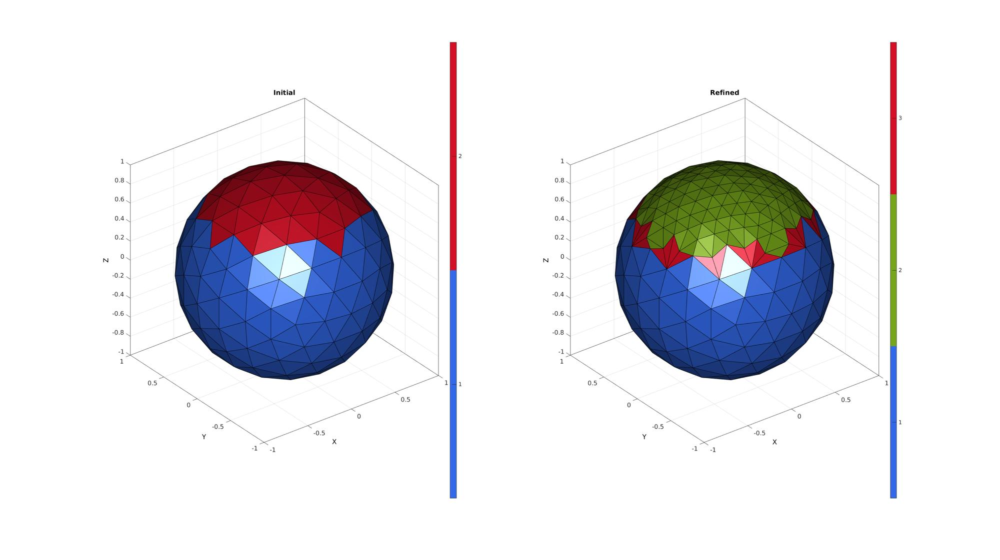
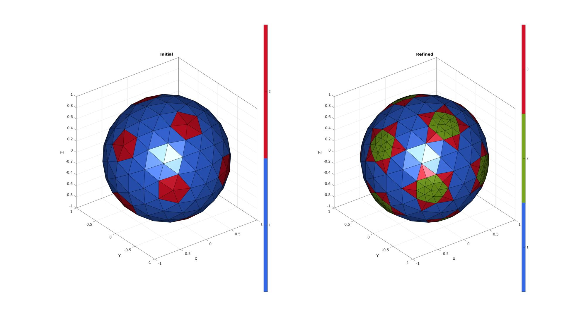
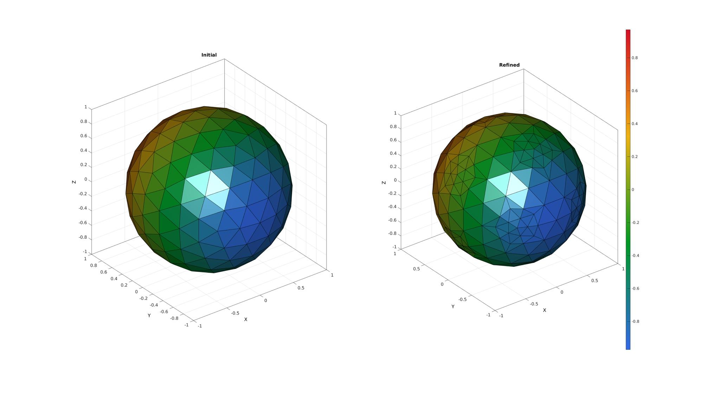
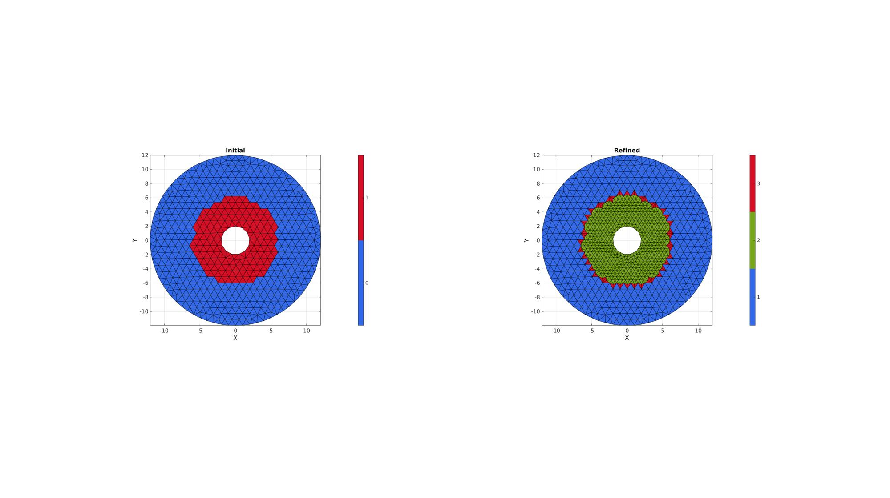

subTriLocal
Below is a demonstration of the features of the subTriLocal function
Contents
clear; close all; clc;
Syntax
[outputStruct]=subTriLocal(inputStruct);
Description
This function refines (using the subTri function) the triangles in F defined by indFaces and splits neighbouring triangles to create a conforming mesh. This way local refinement can be achieved. The output mesh is stored in Fq and Vq and a face color list Cq can also be requested which lists whether a triangle is unaltered (Cq==1), is subdevided (Cq==2) or has been split to connect the two regions (Cq==3). The optional input f (default is 0) defines the location of the new points introduced for the transition elements. Using f>0 (and <1) will place these points closer to the coarse mesh nodes. The optional output indInitial is a list containing all the original nodes.
Examples
Plot settings
fontSize=15; faceAlpha=1; edgeColor=0.*ones(1,3); edgeWidth=2;
Example: Refining a local region of a mesh (e.g. the top half of a sphere)
Building example geometry
%Defining geodesic dome r=1; %sphere radius n=2; %Refinements [F,V,~]=geoSphere(n,r);
Define face list for refinement
L=V(:,3)>0.5;
LF=all(L(F),2);
indFaces=find(LF);
inputStruct.F=F;
inputStruct.V=V;
inputStruct.indFaces=indFaces;
[outputStruct]=subTriLocal(inputStruct);
Fq=outputStruct.F;
Vq=outputStruct.V;
Cq=outputStruct.faceTypeLabel;
%Create face color data to visualize selection
C=ones(size(F,1),1);
C(indFaces)=2;
Plotting results
cFigure; subplot(1,2,1); hold on; title('Initial','FontSize',fontSize); gpatch(F,V,C); colormap(gca,gjet(2)); icolorbar; axisGeom(gca,fontSize); camlight headlight; subplot(1,2,2); hold on; title('Refined','FontSize',fontSize); gpatch(Fq,Vq,Cq); colormap(gca,gjet(3)); icolorbar; axisGeom(gca,fontSize); camlight headlight; drawnow;
For the above a default f of 0 was assumed. Note the difference when instead f=0.25 is used.
f=0.25;
inputStruct.F=F;
inputStruct.V=V;
inputStruct.indFaces=indFaces;
inputStruct.f=f;
[outputStruct]=subTriLocal(inputStruct);
Fq=outputStruct.F;
Vq=outputStruct.V;
Cq=outputStruct.faceTypeLabel;
%Create face color data to visualize selection
C=ones(size(F,1),1);
C(indFaces)=2;
Plotting results
cFigure; subplot(1,2,1); hold on; title('Initial','FontSize',fontSize); gpatch(F,V,C); colormap(gca,gjet(2)); icolorbar; axisGeom(gca,fontSize); camlight headlight; subplot(1,2,2); hold on; title('Refined','FontSize',fontSize); gpatch(Fq,Vq,Cq); colormap(gca,gjet(3)); icolorbar; axisGeom(gca,fontSize); camlight headlight; drawnow;
Smoothening the output mesh
The output mesh can be smoothening normally or using constrained smoothing and using the optional indInitial output. The points defined by indInitial are plotted on the mesh. Note however that smoothening may undo the change induced by the factor f.
indFaces=1:60; inputStruct.F=F; inputStruct.V=V; inputStruct.indFaces=indFaces; inputStruct.f=f; [outputStruct]=subTriLocal(inputStruct); Fq=outputStruct.F; Vq=outputStruct.V; Cq=outputStruct.faceTypeLabel; indInitial=outputStruct.indInitial; smoothPar.Alpha=0.1; smoothPar.Beta=0.5; smoothPar.Method='HC'; smoothPar.n=100; smoothPar.RigidConstraints=indInitial; [Vq]=tesSmooth(Fq,Vq,[],smoothPar); %Create face color data to visualize selection C=ones(size(F,1),1); C(indFaces)=2;
Plotting results
cFigure; subplot(1,2,1); hold on; title('Initial','FontSize',fontSize); gpatch(F,V,C); colormap(gca,gjet(2)); icolorbar; axisGeom(gca,fontSize); camlight headlight; subplot(1,2,2); hold on; title('Refined','FontSize',fontSize); gpatch(Fq,Vq,Cq); colormap(gca,gjet(3)); icolorbar; axisGeom(gca,fontSize); camlight headlight; drawnow;
Keeping track of face data or color information
%Create example color information
[C]=vertexToFaceMeasure(F,V(:,2));
inputStruct.F=F;
inputStruct.V=V;
inputStruct.C=C;
inputStruct.indFaces=indFaces;
[outputStruct]=subTriLocal(inputStruct);
Fq=outputStruct.F;
Vq=outputStruct.V;
Cq=outputStruct.C;
Plotting results
cFigure; subplot(1,2,1); hold on; title('Initial','FontSize',fontSize); gpatch(F,V,C); axisGeom(gca,fontSize); camlight headlight; subplot(1,2,2); hold on; title('Refined','FontSize',fontSize); gpatch(Fq,Vq,Cq); colormap(gjet(size(Cq,1))); icolorbar; axisGeom(gca,fontSize); camlight headlight; drawnow;
ns=50;
t=linspace(0,2*pi,ns);
t=t(1:end-1);
r=12;
x=r*sin(t);
y=r*cos(t);
V1=[x(:) y(:)];
ns=50;
t=linspace(0,2*pi,ns);
t=t(1:end-1);
x=r/6*sin(t);
y=r/6*cos(t);
V2=[x(:) y(:)];
regionCell={V1,V2};
pointSpacing=1; %Desired point spacing
resampleCurveOpt=1;
[F,V]=regionTriMesh2D(regionCell,pointSpacing,resampleCurveOpt);
V(:,3)=0;
VE=patchCentre(F,V);
R=sqrt(sum(VE.^2,2));
L=R<r/2;
L=triSurfLogicSharpFix(F,L,3);
inputStruct.F=F;
inputStruct.V=V;
inputStruct.C=L;
inputStruct.indFaces=find(L);
[outputStruct]=subTriLocal(inputStruct);
Fq=outputStruct.F;
Vq=outputStruct.V;
Cq=outputStruct.faceTypeLabel;
Plotting results
cFigure; subplot(1,2,1); hold on; title('Initial','FontSize',fontSize); gpatch(F,V,L); colormap(gca,gjet(2)); icolorbar; axisGeom(gca,fontSize); view(2) subplot(1,2,2); hold on; title('Refined','FontSize',fontSize); gpatch(Fq,Vq,Cq); colormap(gca,gjet(size(Cq,1))); icolorbar; axisGeom(gca,fontSize); view(2) drawnow;

GIBBON www.gibboncode.org
Kevin Mattheus Moerman, gibbon.toolbox@gmail.com
GIBBON footer text
License: https://github.com/gibbonCode/GIBBON/blob/master/LICENSE
GIBBON: The Geometry and Image-based Bioengineering add-On. A toolbox for image segmentation, image-based modeling, meshing, and finite element analysis.
Copyright (C) 2019 Kevin Mattheus Moerman
This program is free software: you can redistribute it and/or modify it under the terms of the GNU General Public License as published by the Free Software Foundation, either version 3 of the License, or (at your option) any later version.
This program is distributed in the hope that it will be useful, but WITHOUT ANY WARRANTY; without even the implied warranty of MERCHANTABILITY or FITNESS FOR A PARTICULAR PURPOSE. See the GNU General Public License for more details.
You should have received a copy of the GNU General Public License along with this program. If not, see http://www.gnu.org/licenses/.